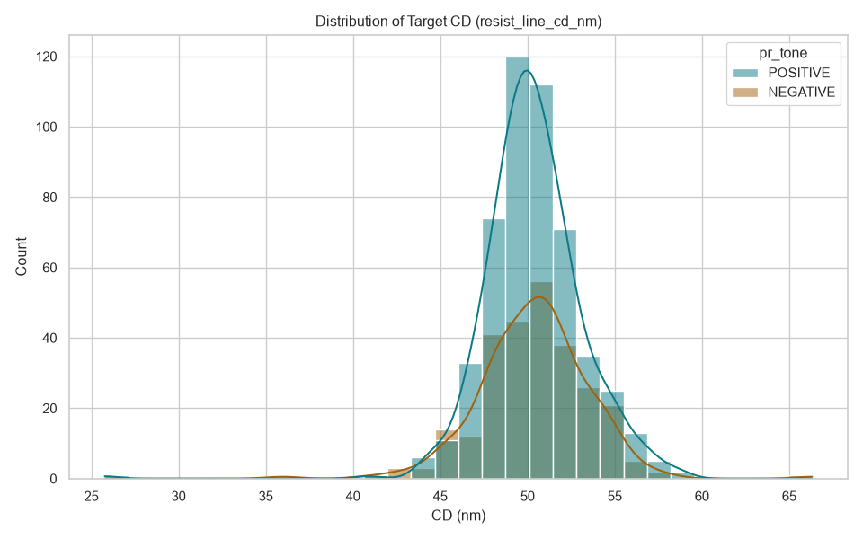
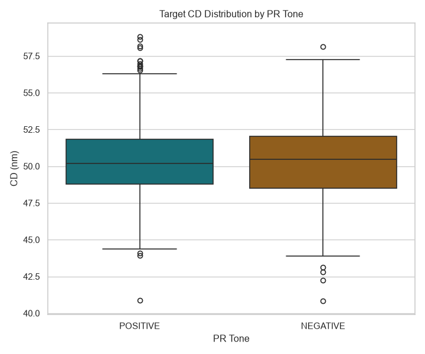
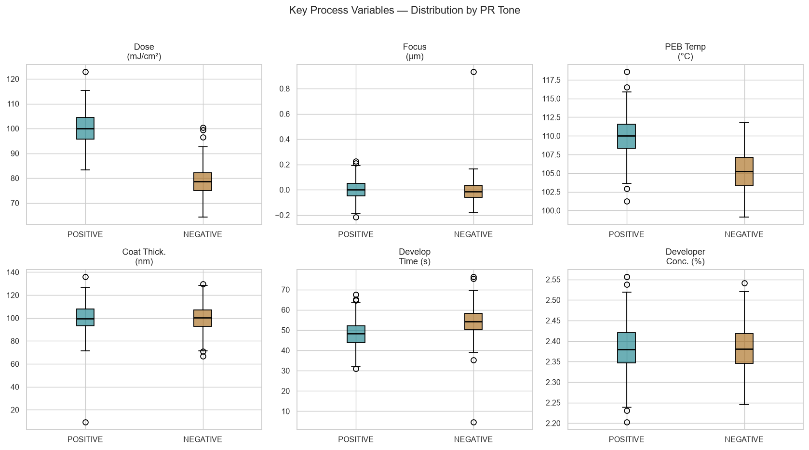
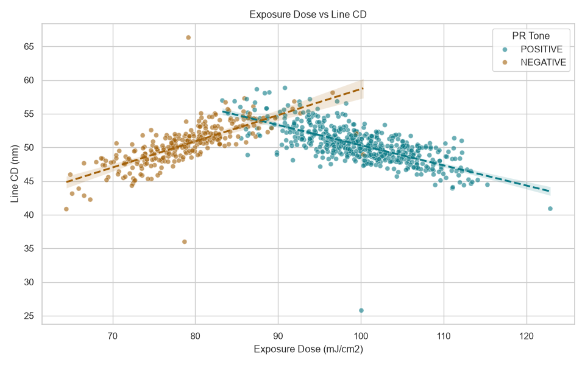
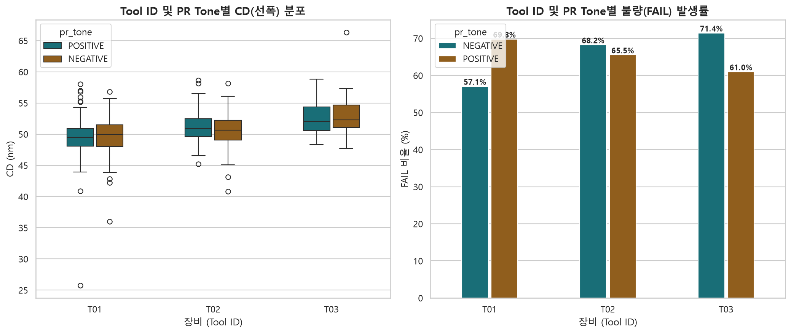
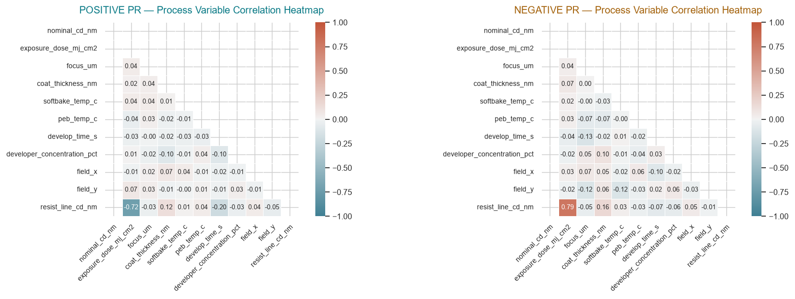
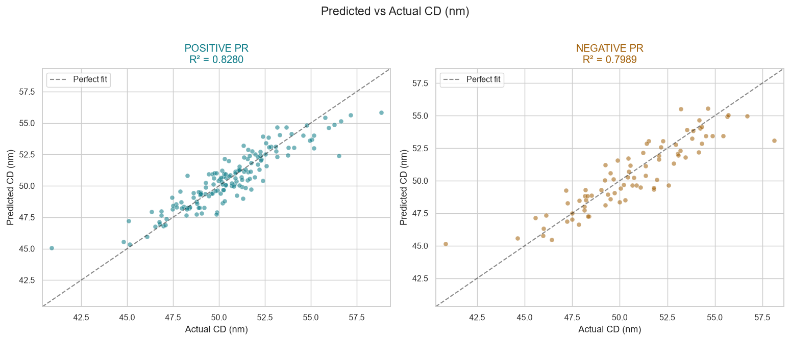
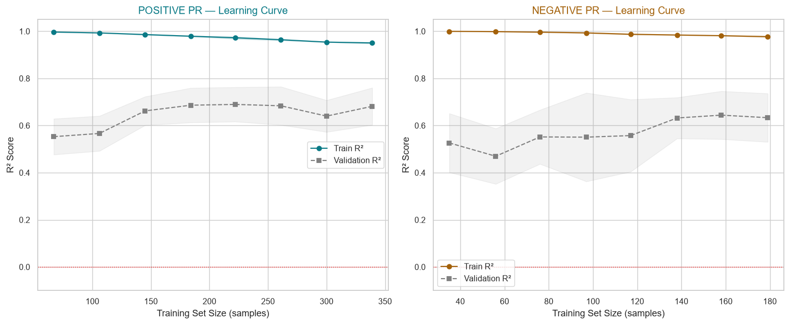
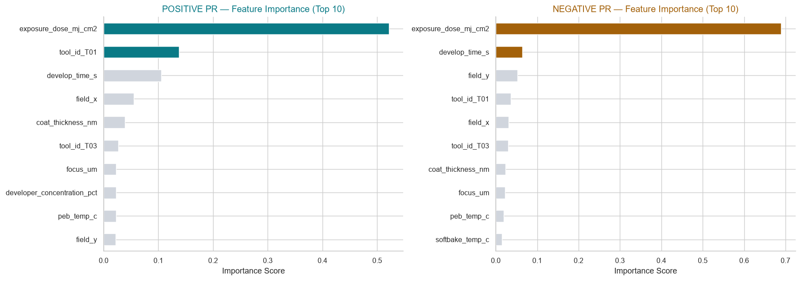

Positive/Negative PR Tone을 분리하여 공정 조건 변수로 resist_line_cd_nm을 예측합니다.
데이터 누수 방지 · 다중공선성(VIF) 통제 · 5가지 모델 경쟁 학습을 적용했습니다.
원본 데이터(805행)에서 이상값 제거 및 결측값 보완을 거쳐 정제 데이터(778행)를 생성했습니다.
sample_id, lot_id, tool_id, sequence
exposure_dose, focus_um, coat_thickness, softbake_temp, peb_temp, develop_time, developer_conc, field_x/y, nominal_cd
resist_line_cd_nm (예측 타겟), cdu_3sigma, ler_nm, scum_probability, pattern_collapse_probability, defect_probability, spec_pass
normalized_dose_pct VIF ~ 6.9 (제거)exposure_dose_mj_cm2 VIF ~ 6.8 (유지)peb_temp_c VIF ~ 1.01 (정상)softbake_temp_c VIF ~ 1.01 (정상)상수항(Constant)을 포함하여 VIF를 정확히 계산한 결과, 온도 변수의 다중공선성은 없었습니다. 다만 normalized_dose는 exposure_dose와 사실상 동일한 변수(선형 관계)이므로 제거했습니다.
결측치와 이상값을 처리한 train_cleaned.csv의 상위 5행입니다.
| sample_id | lot_id | tool_id | sequence | pr_tone | retained_pattern_source | nominal_cd_nm | exposure_dose_mj_cm2 | normalized_dose_pct | focus_um | coat_thickness_nm | softbake_temp_c | peb_temp_c | develop_time_s | developer_concentration_pct | field_x | field_y | resist_line_cd_nm | cdu_3sigma_nm | ler_nm | scum_probability | pattern_collapse_probability | defect_probability | spec_pass |
|---|---|---|---|---|---|---|---|---|---|---|---|---|---|---|---|---|---|---|---|---|---|---|---|
| S00489 | L0024 | T01 | 489 | POSITIVE | UNEXPOSED | 50.0 | 102.691192 | 102.691192 | -0.040447 | 92.879060 | 100.196278 | 109.443946 | 35.223224 | 2.408649 | -0.709753 | 0.245474 | 48.953214 | 3.100934 | 1.246858 | 0.363757 | 0.000647 | 0.080299 | FAIL |
| S00624 | L0031 | T01 | 624 | POSITIVE | UNEXPOSED | 50.0 | 97.425357 | 97.425357 | 0.123277 | 100.752230 | 99.180757 | 107.726072 | 48.907885 | 2.362926 | 0.027606 | 0.315299 | 50.599678 | 3.686919 | 1.592575 | 0.231017 | 0.026269 | 0.113278 | FAIL |
| S00623 | L0031 | T01 | 623 | POSITIVE | UNEXPOSED | 50.0 | 102.875702 | 102.875702 | -0.035468 | 101.539379 | 98.355469 | 111.830158 | 56.554731 | 2.415340 | -0.831918 | -0.741168 | 48.380202 | 2.777548 | 1.203999 | 0.031906 | 0.053311 | 0.028353 | PASS |
| S00213 | L0010 | T02 | 213 | POSITIVE | UNEXPOSED | 50.0 | 100.912311 | 100.912311 | -0.002737 | 95.172174 | 95.613591 | 114.470335 | 42.346029 | 2.382750 | 0.435762 | -0.055490 | 51.352991 | 1.651333 | 2.216947 | 0.198318 | 0.000194 | 0.026564 | PASS |
| S00436 | L0021 | T01 | 436 | NEGATIVE | EXPOSED | 50.0 | 82.454342 | 105.710694 | 0.047920 | 112.096801 | 95.988539 | 103.122850 | 67.753642 | 2.370097 | 0.721702 | 0.011136 | 52.830730 | 2.726019 | 1.918345 | 0.028659 | 0.102112 | 0.044266 | PASS |
pr_tone: 감광액(PR) 특성 — POSITIVE(노광 부위 제거) / NEGATIVE(노광 부위 잔류)exposure_dose_mj_cm2: 노광 장비가 웨이퍼에 조사한 실제 빛 에너지 (mJ/cm²)focus_um: 노광 장비 렌즈의 초점 위치 편차 (µm). 0에 가까울수록 선폭 정밀도 높음coat_thickness_nm: 스핀 코팅된 감광액 두께 (nm)softbake_temp_c / peb_temp_c: 노광 전(Softbake) / 후(Post-Exposure Bake) 가열 온도 (°C)develop_time_s: 현상액 처리 시간 (초) — CD에 비선형적 영향을 미침resist_line_cd_nm: 현상 후 측정한 PR 라인의 선폭, Critical Dimension (nm) — 예측 타겟spec_pass: 공정 합격(PASS) / 불합격(FAIL) 판정 — 학습 제외 결과 변수PR Tone별 분포 비교 · 핵심 공정 변수 박스플롯 · Dose-CD 회귀 산점도를 통해 데이터의 전반적 특성을 파악합니다.

Positive/Negative PR별 선폭 분포 비교. Positive는 50nm 부근에 집중, Negative는 분산이 큼.

두 그룹의 중앙값, IQR, 이상치(Outlier)를 통계적으로 비교.

Dose, Focus, PEB Temp 등 6가지 핵심 공정 변수의 분포가 Positive와 Negative 그룹 간에 어떻게 다른지 한눈에 비교. 특히 Dose 분포의 차이가 두드러집니다.

Positive PR(청록)은 Dose 증가 → CD 감소(음의 상관). Negative PR(주황)은 Dose 증가 → CD 증가(양의 상관). 두 그룹의 반대되는 광화학적 메커니즘을 시각적으로 확인.

어떤 노광 설비(Tool)에서 가공되었느냐에 따라 CD 산포와 FAIL 비율이 어떻게 달라지는지 확인합니다. 설비 간 편차(Tool Matching)를 진단하는 데 유용합니다.
임계 치수(resist_line_cd_nm)와 모든 수치형 변수의 Pearson 상관계수 목록입니다.
⚠ 결과 변수(Output)는 CD와 상관이 높게 나오더라도 모델 학습에 사용하면 데이터 누수(Data Leakage)가 발생합니다.

셀 색이 진할수록 강한 양(파랑)/음(빨강)의 상관관계를 나타냅니다. 대각선에 가까운 변수끼리 높은 상관이 나타나면 다중공선성을 의심해야 합니다.
INPUT — 공정 조건 변수
exposure_dose_mj_cm2 -0.6677develop_time_s -0.1741coat_thickness_nm +0.1082peb_temp_c +0.0483field_y -0.0349focus_um -0.0277developer_concentration_pct -0.0260field_x +0.0138softbake_temp_c +0.0075OUTPUT — 결과 변수 (학습 제외 / 데이터 누수 주의)
scum_probability +0.6649defect_probability +0.4910pattern_collapse_probability -0.2413cdu_3sigma_nm +0.1477ler_nm +0.0004INPUT — 공정 조건 변수
exposure_dose_mj_cm2 +0.7140coat_thickness_nm +0.1501develop_time_s -0.0475softbake_temp_c +0.0448field_x +0.0430focus_um -0.0404developer_concentration_pct -0.0311peb_temp_c -0.0181field_y -0.0047OUTPUT — 결과 변수 (학습 제외 / 데이터 누수 주의)
scum_probability -0.6122pattern_collapse_probability -0.2586defect_probability -0.1573ler_nm +0.0809cdu_3sigma_nm +0.0739
다중공선성 통제 후 공정 조건 변수만 입력하여 5가지 알고리즘을 동일 조건(70% 학습 / 30% 검증, random_state=42)으로 경쟁 학습했습니다.
각 PR 그룹별 검증 R²가 가장 높은 모델을 최종 채택합니다.
| 모델 | POSITIVE R² | NEGATIVE R² | 알고리즘 특성 |
|---|---|---|---|
| Random Forest | 0.7659 | 0.5435 | 독립 트리 배깅(Bagging), 과적합 강건 |
| XGBoost | 0.7725 | 0.5622 | 잔차 순차 학습(Boosting), L1/L2 정규화 |
| LightGBM | 0.7923 | 0.5155 ▼ | Leaf-wise 성장, 대용량 고속 — 소규모 불리 |
| Stacking Ensemble | 0.8056 | 0.5752 ★ | RF+XGB+LGBM → Ridge CV 최종 예측 |
| XGBoost + Optuna | 0.8158 ★ | 0.5490 | 베이지안 탐색 50 trial, 자동 최적 파라미터 |

완벽한 모델이라면 모든 점이 y=x 대각선(점선) 위에 정렬됩니다. Positive(R² 0.82)는 대각선에 밀집, Negative(R² 0.58)는 분산이 크게 나타납니다.

훈련 데이터가 늘어남에 따른 Train/Validation R² 변화. Negative PR의 Validation 곡선이 수렴하지 않는 것은 데이터 부족의 직접적 증거입니다.

두 그룹 모두 Dose와 tool_id가 최상위. Positive는 develop_time, Negative는 coat_thickness의 상대적 영향이 더 큽니다.
tool_id_T01 0.256exposure_dose_mj_cm2 0.181tool_id_T03 0.147tool_id_T02 0.105develop_time_s 0.064exposure_dose_mj_cm2 0.309tool_id_T03 0.221tool_id_T01 0.197develop_time_s 0.072tool_id_T02 0.071exposure_dose)과 설비 간 편차(tool_id)가 임계 치수(CD) 산포를 결정짓는 핵심 제어 인자입니다. 엔지니어는 설비(T01, T03) 간의 광학 챔버 매칭(Tool Matching) 상태를 최우선으로 점검해야 합니다.
spec_pass(합격 여부) 변수가 없는 블라인드 테스트용 Holdout A 데이터(200건)와 B 데이터(200건)의 결과를
각각 분리하여 도출했습니다.
POSITIVE → RF (class_weight='balanced') Acc 79.95% / F1 68.8%NEGATIVE → XGBoost (baseline) Acc 76.58% / F1 67.8%불균형(FAIL 67.4%) 보정을 위해 POSITIVE는 RF의 class_weight='balanced'을, NEGATIVE는 데이터 부족으로 인해 모델 변경/튜닝이 모두 역효과를 내서 XGBoost 기본을 유지합니다.
※ A_holdout_predictions.csv 저장됨
※ B_holdout_predictions.csv 저장됨